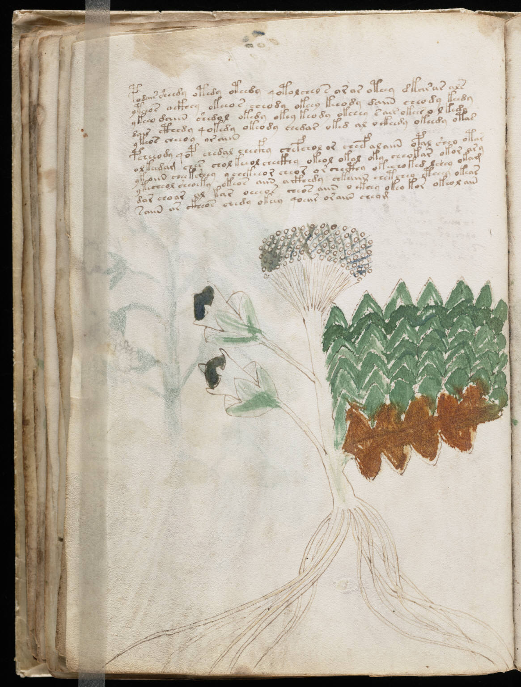

f31v
1podair sheedy otedy oteedy qotolcheo s arar oteey dkarar als2ytchos octhey okeeos cheody okeey kchody daiin cheody keedy3ykeeo daiin shedal okedy okey keody okchey sair okees o lkedy4dair cthedy qokedy okeody chedar oked al ockhedy okeedy otas5ykeos cheeoy ar aiin6pcheeody qop chedal eeecfhy chefchol or cheef alaiin opal sheo otar7olteedam ches chol keeol checkhy okeol okal oky cheokar okor ary8yk aiin chee ksheey ychek eeor cheor or checthy okechoked lchey okam9ytecheol sheoeky okeos aiin acthedy chkaiin chetchey ctheey okear10dar seoar al kar oeeeos cheos aiin o ekeey okeo kor oteol ain11saiin ar ckheos chedy okeey qoear oraiin cheom
